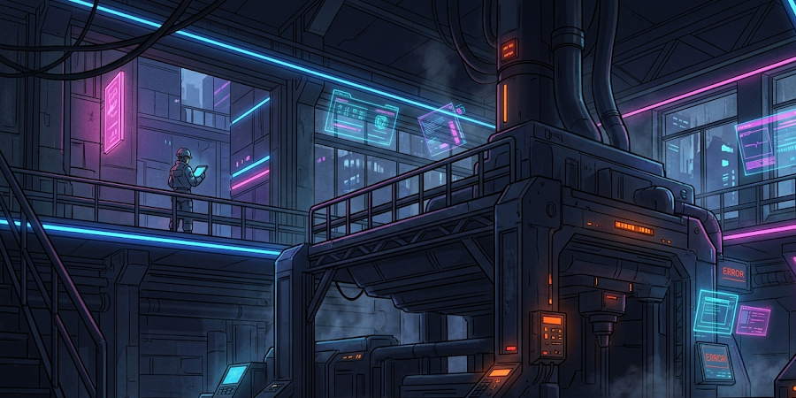
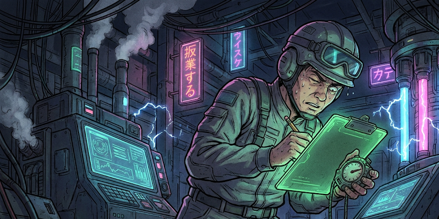
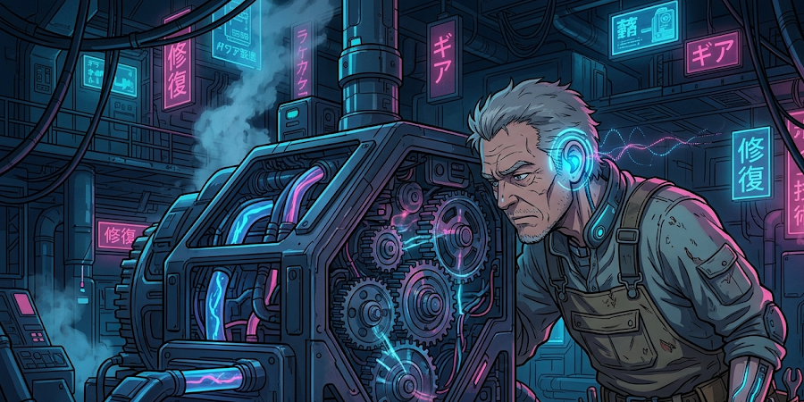
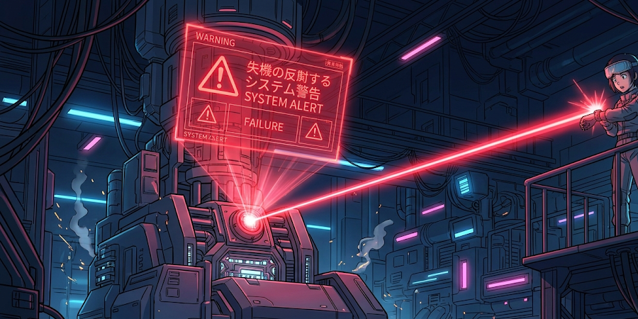
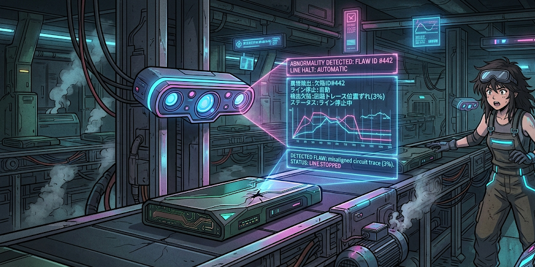
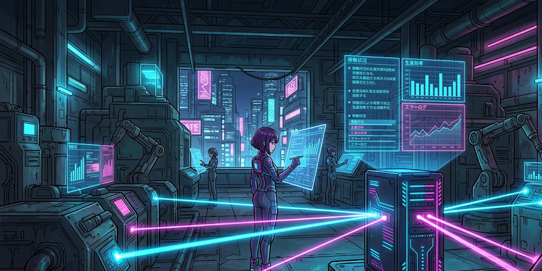

機械がいつ止まったか分からない
工場の機械がチョコ停（一時停止）しても、担当者が現場に行くまで気づかず、生産計画に遅れが生じている。

工場の生産設備やセンサー等のハードウェア（IoT）と自社システムを直結させます。古い機械でも後付けセンサーでデータを収集し、目視確認なしに工場の稼働状況をリアルタイムで可視化します。

工場の機械がチョコ停（一時停止）しても、担当者が現場に行くまで気づかず、生産計画に遅れが生じている。

機械の稼働時間や生産個数を、作業員がストップウォッチで計って紙に記録しており、正確性に欠ける。

「機械の音がいつもと違う」というベテランの感覚に頼っており、若手では故障の予兆に気づけない。
※以下は支援内容に基づく想定イメージです。
故障の予兆を事前に検知し、機械が完全に停止する前にメンテナンスを行います。
ランプやアラームだけでなく、担当者のスマホ・スマートウォッチに直接通知します。
夜間や休日でもセンサーが工場の状態を監視し続け、異常があれば即座に管理者を呼び出します。
「つなげモン IoT」は、特殊なプロトコルを持つ工場設備と、クラウドシステムを繋ぐ強力な架け橋になります。
※以下は支援内容に基づく想定イメージです。

異常発生から0.5秒で、担当者のスマホにプッシュ通知
これまでは機械のパトランプを目視で確認する必要がありましたが、システム直結により、設備の異常信号をキャッチした瞬間にチャットツールへ自動通知。対応スピードが劇的に向上しました。

振動センサーの異常値で、不良が出る前にアラート通知
後付けの振動・温度センサーが「いつもと違う波形」を検知。熟練工の勘に頼っていた故障の予兆をデータで捉え、不良品を大量生産してしまう前に対策が打てるようになりました。

PLCから直接データを取得し、リアルタイムにグラフ化
各機械の稼働時間や生産個数を、制御装置（PLC）から直接データベースへ送信。事務所のモニターに工場の「今」が常に表示され、日報作成の手間もゼロになりました。
既存の機械を改造する必要はありません。外付けの電流センサーや振動センサーを後付けするだけで、データ収集の準備が完了します。
センサーから上がってくるデータを蓄積し、「正常時」の波形をシステムに学習させます。
ダッシュボードによる稼働状況の可視化と、異常値が出た際のアラート通知の運用をスタートします。
工場の「今」を、手元のスマホで確認しませんか。
まずは1台の機械から。貴社の設備環境に合わせた最適なIoT化プランをご提案いたします。